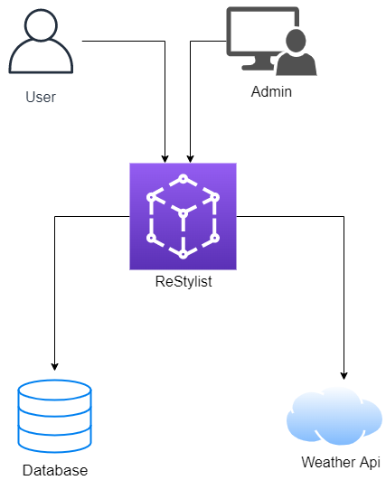

HCI Homework
ReStylist is a web application which offers you fabulous ideas when you have no idea what to wear in a rainy day, when you are in a rush or when you have an important interview and you want to make a good impression.
1. Introduction
ReStylist is a web application made for everyone who don't have so much time to put together an outfit that will look stylish and at the same time will draw attention. This application generates outfit pieces after an user will complete a formular with their tastes and preferences. The looks are made quick and easy with our users help, by choosing how they feel in that day: sad, happy, bored and so on; also by the weather. So, if it's raining, ReStylist will make sure that your outfit will include a raincoat.
1.1 Purpose
The purpose of this document is to present the functionalities of the web applications, ReStylist. It contains information about the way of using this application and the goals.
1.2 Conventions
- The template used is IEEE System Requirements Specification Template.
- The references will be in italic format.
1.3 Audience
This document is dedicated for the users of this application, also for the author and anyone who is interested in this topic.
1.4 Product Scope
This web application scope is to optimise the time used by choosing an outfit in different situations: at work, on vacation, a wedding, a party.
Our users will define their own style and increase their imagination by combining in a unique way pieces of clothing that you already have in your closet.
The goal of the application is to make sure that the users are happy with the results by starting their day with less concerns about what to wear.
1.5 References
- Buraga Sabin Corneliu HCI site.
- H. Rick /Rick's GitHub /IEEE-SRS-Template.
- Scholarly HTML /Scholarly HTML Guide
2. Overall Description
2.1 Product Perspective
ReStylist is a web application made in order to achieve BSc (Bachelor of Science) title within the Faculty of Computer Science Iași.
2.2 Product Functions
The application has the following functionalities: creating an account which includes a form with multiple fields, some of them referring mostly to the style and preferences that the user has in fashion and color palette, login to the application with an email address and a password, a generator which compose an outfit according to weather, mood and the style which the user wants to approach that day. Another functionalitie is visioning the whole outfit on a mannequin to get an idea of what all the pieces will look like together.
2.3 User Classes and Characteristics
The application can be used by every person who doesn't have that much time to put together an outfit that will look good and reflect their own personality and mood. It can be used mostly by women because the design is meant to attract the feminine side.
Various personas interacting to the system:
-
Name: Anais Popa
Date of birth: 10/25/1980
Gender: Female
Location: Iasi, Romania
Work Place: BRD Bank
School: Faculty of economics and business administration
Main Points: Anais Popa is a mother who has 3 kids: 2 twin boys and one girl, so she doesn't have the neccesary time to be careful of what she's wearing everytime. At work she needs to wear an office outfit to look professional and clean, but her routine is: she's waking up at 6 am to drink her coffee and do her makeup. After that, at 7 am she needs to wake up her kids to get ready for school and make their breakfast, all of that in 30 minutes so she could get at 7:40 at school and then at 8 at the bank. Her experience with clothing in relative the same as every normal person, once a month or even less often she goes at the mall for a shopping spree. Even in that moment she doesn't have enough time for her because she needs to take care for her kids too.
Goals: She have never used this kind of application before, so this kind of design and approach sounds good to her. The idea that she can get a full outfit in minutes it'a a saviour. She could get more sleep and organize better.
Frustrations and Pain Points: The difficulties that Anais can have are the lack of an article or not feeling satisfied with the outfit and be forced to do all the steps again.
Scenarious: It's sunday and Anais needs to go her sister's birthday which is taking place at a pasta restaurant, so she needs to put together a casual outfit yet feminine. Of course, before that she has to get her kids ready and after that maybe she has 5-10 minutes to choose something to wear. But here it comes ReStylist. First she's logs in to the application after that she press the "My style" button and first of all, she sees on the first page that the weather it's sunny, she's choosing the way she feels by an emoji listed on the second page, after that the kind of outfit that she wants to be generated (casual). After all these steps in a few seconds she gets an image with how her outfit should look. If she doesn't have a piece of clothing that appears in the generated outfit she can anytime replace it with something else.
-
Name: Name: Alina Georgescu
Date of birth: 4/14/1997
Gender: Female
Location: Bucuresti, Romania
Work Place: instagram influencer and UI designer
School: Faculty of Computer Science
Main Points: Alina is a UI Designer who travels 4-8 times each month for work. She has a specific regions in which she travels, and she often visits the same cities and stays at the same hotel. She is frustrated by the fact that no matter how frequently she takes similar trips, she spends hours of her day booking travel and making her luggage, so she looses a lot of time trying to put together outfits for the trip.
Goals: She wants to get an outfit for every single day of her trip so she could have more time to visit the city and to focus on her work. She wants comfortable and simple looks that does not require such fancy pieces of clothing.
Frustrations and Pain Points: The difficulties that Alina have are the process of choosing what to put in the luggage; she really dislikes that. Also, she spends a lot of money on these trips so she can't afford unique and high-end pieces of clothing.
Scenarious: It's summer and it's time for Alina to travel to Paris in France for 5 days. She has an important meeting on the second day, so she needs something feminime and classy but at the same time comfortable because it's really hot. She opens the app and she starts to generate an outfit based on these criteria.
-
Name: Maria Alexandrescu
Date of birth: 7/22/1999
Gender: Female
Location: Iasi, Romania
Work Place: Student
School: Faculty of Arhitecture
Main Points: Maria is in introvert and a shy girl. She is studying at Faculty of Arhitecture so she got a lot of projects to do and also she's occasionally helping her mother who is an arhitech trying to learn as much as possible. She's waking up almost everyday at 7 am and rush to the college, so she doesn't have enough time to put together an outfit for it even though she loves fashion and wants to be fashionable.
Goals: She wants an app that will generate her complex looks for her dressy style that way she will get much more confidence and make her feel good about herself.
Frustrations and Pain Points: The difficulties that Maria have are lack of time and confidence.
Scenarious: Today Maria has an important presentation at the college at 8:30 am and it's already 7:20 and she needs an outfit idea as soon as possible. She opens the app, she logs in and she follows those 3 steps to generate a dressy outfit for her presentation. It's raining later that day so her generated outfit includes a raincoat and an umbrella. In 5 minutes she's ready to go out and take the buss to college.
-
Name: Carmen Mihailescu
Date of birth: 11/30/1984
Gender: Female
Location: Cluj-Napoca, Romania
Work Place: Fiancé consultant
School: Faculty of Economisc
Main Points: Carmen is working at an important company in Cluj-Napoca as a fiancé consultant and she's collaborating with a lot of people so she needs to look professional and inspire confidence. At this company there is a dress code and everybody needs to have a flawless clean look and the outfit must include a shirt.
Goals: She wants an app that will save her hours of trying clothes and choosing combinations that will be part of the dress code and at the same time feel comfortable..
Frustrations and Pain Points: She finds difficulties to choose what to wear for the day, she's not sure what to match trying a lot of combinations and she's taking a lot of time on deciding what to wear so usually she wears the same clothes which she wore 2-3 days back.
Scenarious: It is an important day at work for Carmen. She will have a chat with her boss about a raise and she wants something that feel make her look professional and worthy, so she opens the app and chooses an office outfit that will impress her colleagues and most importantly her boss.
2.4 Operating Environment
The application is made to work on any device that has a web browser.
2.5 Design and Implementation Constraints
The user interface was created by using Angular which includes HTML, CSS AND JavaScript. The backend implementation was made using .Net and the data for users and clothes are stored in a non-relational database using Amazon Web Services.
2.6 User Documentation
The user documentation regarding the purpose of the application is found in the "About" section.
2.7 Assumptions and Dependencies
The way this app works can be affected by different types of broswers or screen rezolution.
3. External Interface Requirements
3.1 User Interfaces
-
Home page

-
About

-
My Style


3.2 Hardware interface
The application doesn't require any hardware interface.
3.3 Sofware interface
The application will communicate with a database (Amazon web services) to introduce users and clothing pieces, also to extract information about these two.
3.4 Communications interface
The register method will include a form which in the end, after de "Register" button will be pressed, it will send a confirmation email to the user to validate the account created. Also, the users's accounts will pe protected using the identity framework from .Net.
4. System Features
4.1 The register/login feature
4.1.1 Priority and description
Any user who wants to benefit from application's features needs to fill a form, then to validate the email address. After these two steps the email address and the password will be stored in the database. The priority of these features is high because users can't generate an outfit if they don't have an account.
4.2 The outfit customizer
4.2.1 Priority and description
After the users login to the application they can press the "My Style" button which is placed in the navigation bar and they will be redirected to a page that shows them the weather that day. On this page it would be a call to action button which will redirect them to another page that includes a series of emoji reflecting their mood. After selecting an emoji, the user will be redirected to the next page where is a list of styles that the user would want to approach: casual, sporty, elegant and so on. Finally after completing these 3 steps, the final outfit will be generated and shown on a mannequin.
The priority of this feature is high because it represent the main feature of the application.
5. Other Nonfunctional Requirements
5.1 Performance Requirements
The application objective is generating an putfit as fast as possible and to satisfy the users expectations.
5.2 Safety Requirements
There is no damage or loss of data because everything is generated by the system.
5.3 Security Requirements
The passwords will be encypted with the identity framwork from .Net, so this will prevent data fraud. The only information about the user that will be diplayed is the username.
5.4 Software Quality Attributes
The user interface is friendly and easy to use. The maintenance of the application will be exxecuted by the developer including updating the data from the database.
5.5 Business Rules
The only persons who can update the features of the application are the author and possible contributors.
Analysis Models
The diagram of the application
Questions, Options, Criteria
All the buttons are where the users expect them to be so the interaction with the app will be as smooth as possible.
This app offers our users a very familiar yet aesthetically pleasing user experience. I achieved this by researching the interface design of the top companies in fashion industry: SHIEN, ASOS, SINSAY, ABOUT YOU.
To direct users to the customization page I have included a link in the navigation bar and a call to action button in land page. Since this is a new concept, after clicking on the call to action button or the link in navigation part, first time, users are redirected to a page explaining the core function of the customizer. Existing users are able to log directly to thei account from the loggin button. On "My Style" page, after being walked through the highlights of the service, users will have a call to action section that will lead them to the register page.
Wireframes
References
- Figma https://www.figma.com/
- Importance of colors on your website https://uxdesign.cc/importance-of-colors-on-your-website-and-logo-b5468e9f0a10
- Scholarly HTML Person Person Template
- Template document Scholarly HTML IEEE-SRS-Tempate
- Creating QOC and the sketches Build your own sketches
- Photos and images Click here
Contributors
-
Scholarly Document
- Bordeianu Adelina
-
Diagrams, sketches, wireframes, personas
- Bordeianu Adelina
-
Application Design
- Bordeianu Adelina